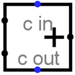

Adder
Adder
| Library: |
Arithmetic |
| Introduced: |
2.0 Beta 11 |
| Appearance: |
 |
Behavior
This component adds two values coming in via the west inputs and
outputs the sum on the east output. The component is designed so that it
can be cascaded with other adders to provide add more bits than is
possible with a single adder: The carry-in input provides a
one-bit value to be added into the sum also (if it is specified), and a
carry-out output provides a one-bit overflow value that can be fed to
another adder.
If either of the addends contains some floating bits or some error
bits, then the component will perform a partial addition. That is, it
will compute as many low-order bits as possible. But above the floating
or error bit, the result will have floating or error bits.
Pins
- West edge, north end (input, bit width matches Data Bits attribute)
- One of the two values to add.
- West edge, south end (input, bit width matches Data Bits attribute)
- The other of the two values to add.
- North edge, labeled c in (input, bit width 1)
- A carry value to add into the sum. If the value is unknown (i.e.,
floating), then it is assumed to be 0.
- East edge (output, bit width matches Data Bits attribute)
- The lower dataBits bits of the sum of the two values
coming in the west edge, plus the cin
bit.
- South edge, labeled c out (output, bit width 1)
- The carry bit computed for the sum. If the values added together as
unsigned values yield a result that fits into dataBits
bits, then this bit will be 0; otherwise, it will be 1.
Attributes
When the component is selected or being added,
Alt-0 through Alt-9 alter its Data Bits
attribute.
- Data Bits
- The bit width of the values to be added and of the result.
Poke Tool Behavior
None.
Text Tool Behavior
None.
Back to Library Reference